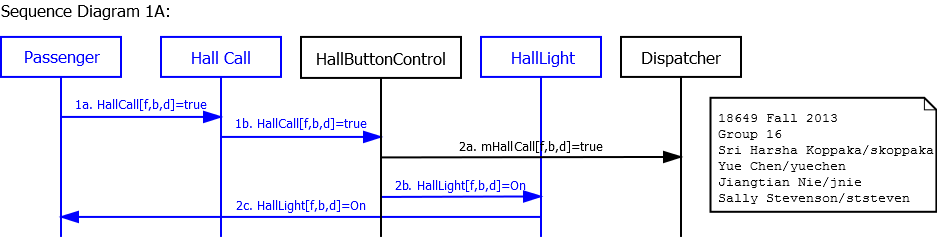
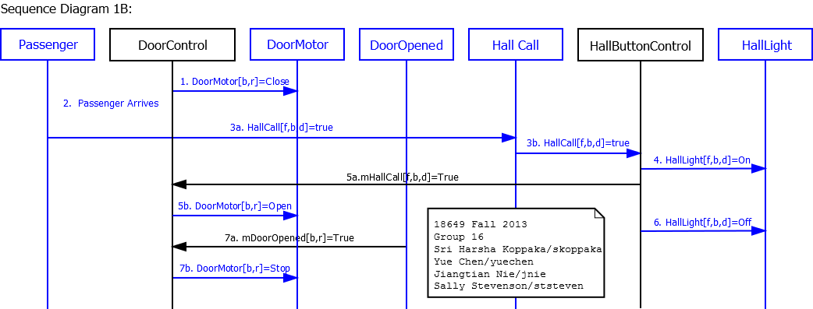
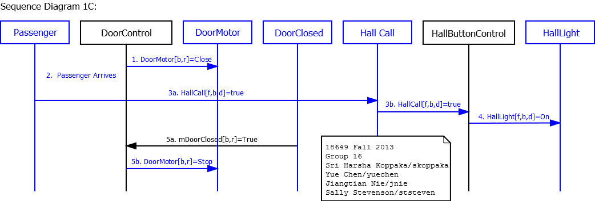
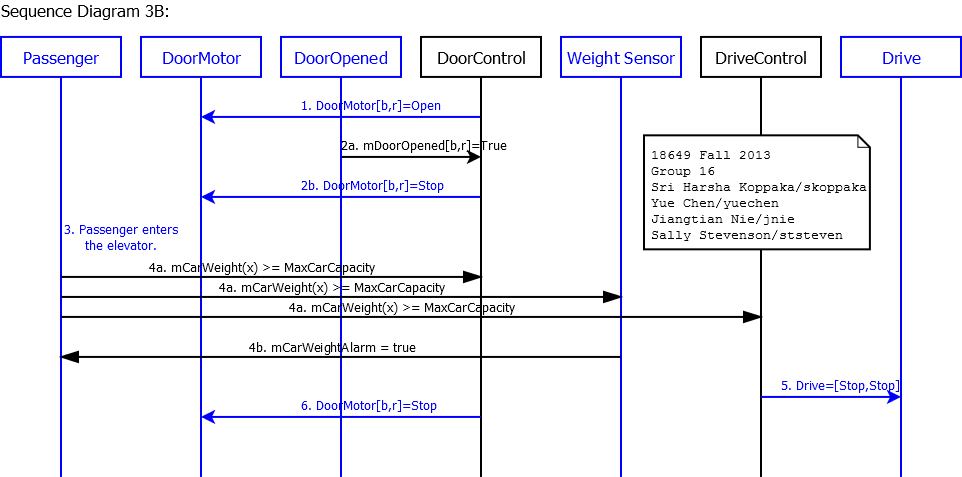
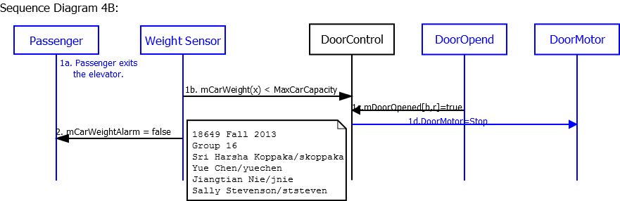
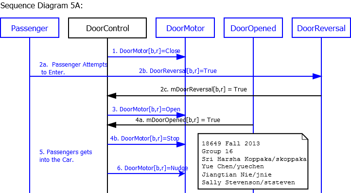
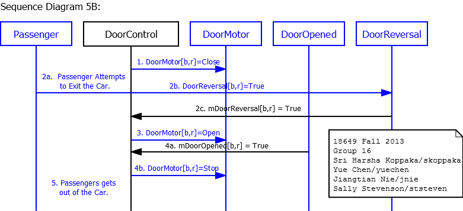
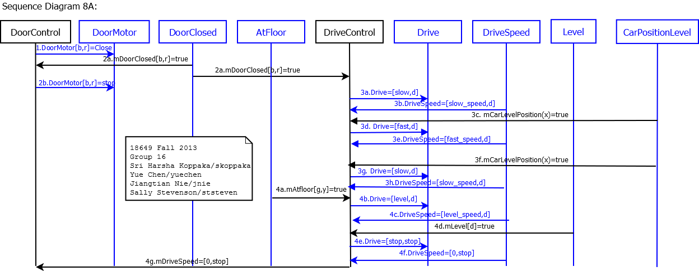
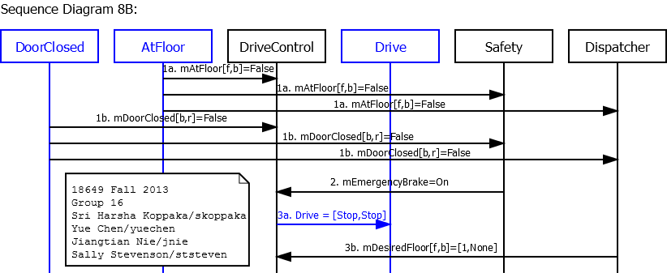
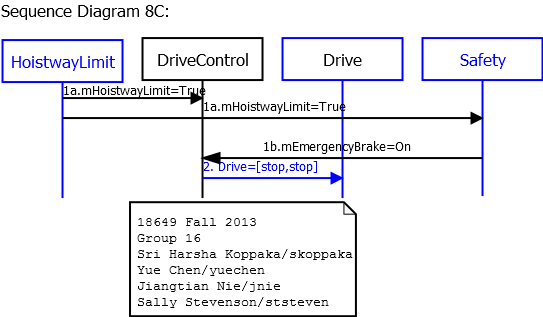

18-649 Scenarios and Sequence Diagrams
18649 Fall 2013
Group 16 - Jiangtian Nie (jnie)
Sally
Stevenson (ststeven)
Sri
Harsha Koppaka (skoppaka)
Yue
Chen (yuechen)
Scenarios:
- 1. Passenger Makes a Hall Call
- 2. Passenger Makes a Car Call
- 3. Passenger Enters Car
- 4. Passenger Exits Car
- 5. Passenger Triggers Door Reversal
- 6. Determine Car Position - R-T9
- 7. Determine Car Direction
- 8. Move Car to Next Floor
- 9. Cycle Doors - R-T8.3
Use Case 1: Passenger Makes A Hall Call
Scenario 1A: Passenger arrives at a hallway while elevator is elsewhere.
Pre-Conditions:
- All doors are closed.
- Passenger has already arrived at a hallway to use the elevator.
- Car is at another floor.
Scenario:
- Passenger pushes hall call (up or down) button for passenger's desired direction d.
- Passenger sees that corresponding hall button light turns on.
Post-Conditions:
- Elevator has not yet arrived at the passenger's floor.
- All doors are closed.
- Hall button light for passenger's desired direction is on.
Sequence Diagram:
{kind=link}
Scenario 1B: Passenger arrives at a hallway when elevator is already there and the car is traveling in the same direction as desired by passenger.
Pre-Conditions:
- Car is at same floor as passenger.
- Car is traveling in same direction d as desired by passenger.
- At least one door[b,r] is open.
- Hall button light [f,b,d] for passenger's desired direction is off.
Scenario:
- Door[b,r] starts closing.
- Passenger arrives at a hallway [f, b] to use the elevator, with intent to travel in direction d.
- Passenger presses hall call button before doors are too fully closed for passenger to enter.
- Hall button lights up.
- Doors start reopening.
- Hall button is unlit.
- Doors open completely.
Post-Conditions:
- Elevator is at the passenger's floor.
- Door is closed.
- Hall button light for passenger's desired direction is on.
Sequence Diagram:
{kind=link}
Scenario 1C: Passenger arrives at a hallway when elevator is already there and the car is traveling in opposite direction as desired by passenger.
Pre-Conditions:
- Car is at same floor f as passenger.
- Car is traveling in opposite direction ~d than direction d desired by passenger.
- At least one Door[b,r] is open.
- Hall button light for passenger's desired direction is off.
Scenario:
- Door[b,r] starts closing.
- Passenger arrives at a hallway [f,b] to use the elevator going in direction d.
- Passenger presses hall call button before doors are fully closed, but after doors are too fully closed for passenger to enter.
- Hall button lights up.
- Doors complete closing.
Post-Conditions:
- Elevator is at the passenger's floor.
- All doors are closed.
- Hall button light for passenger's desired direction is on.
Sequence Diagram:
{kind=link}
Use Case 2: Passenger Makes A Car Call
Scenario 2A: Passenger is in the car and elevator is not at the desired destination floor.
Author name: Sally Stevenson
Pre-Conditions:
- Car is at floor f, with at least one Door[b,r] open.
- Passenger is in the car and elevator is not at the desired destination [g,c], where f != g. Also, b might or might not be equal to c.
- Car call button for the desired destination is not lit.
Scenario:
- Passenger pushes car call button for the desired destination [g,c].
- CarLight[f,b] is lit.
- Door[b,r] starts closing.
- Door[b,r] completes closing.
Post-Conditions:
- Elevator is at floor f.
- All doors are closed.
- Car light for the desired destination is on.
Sequence Diagram:
{kind=link}
Scenario 2B: Passenger is in the car and the elevator has arrived at the passenger's desired floor, but passenger has not yet exited the car as the doors begin to close.
Author name: Sally Stevenson
Pre-Conditions:
- Passenger is in the car.
- Elevator has arrived at the desired hallway, but the passenger has not yet exited the car.
- At least one door[b,r] is open.
Scenario:
- Door[b,r] starts closing.
- Passenger presses the car call button for the desired hallway [f,b].
- CarLight[f,b] is lit.
- Doors begin to reopen.
- CarLight[f,b] is unlit.
- Doors finish opening.
Post-Conditions:
- Car light is not lit.
- All doors are open.
- Passenger is in the car.
Sequence Diagram:
{kind=link}
Use Case 3: Passenger Enters Elevator
Scenario 3A: Passenger is waiting at a hallway for the elevator and has already pressed the hall call button.
Author name: Sally Stevenson
Pre-Conditions:
- Car is about to arrive at a hallway [f,b] at which passenger is waiting.
- The hall call button for passenger's desired direction d has already been pressed
- The elevator is going in direction d.
- Passenger is outside the car.
- All doors are closed.
Scenario:
- Car stops at floor f.
- Door[b,r] opens.
- The hall call button for the passenger's desired direction is unlit.
- Door[b,r] finishes opening.
- Passenger enters elevator.
Post-Conditions:
- Passenger is in the car.
- Car is at floor f, with all doors open.
Sequence Diagram:
{kind=link}
Scenario 3B: Passenger enters the car and car is overweight.
Author name: Yue Chen (yuechen)
Pre-Conditions:
- Car is at a hallway [f,b] at which passenger is waiting.
- The elevator is going in the same direction d as the passenger's desired direction.
- Passenger is outside the car.
- All doors are closed.
Scenario:
- Door[b,r] opens.
- Door[b,r] finishes opening.
- Passenger enters elevator.
- Car weight alarm rings.
- Drive is commanded to Stop.
- DoorMotor[b,r] is commanded to stay open.
Post-Conditions:
- Passenger is in the car.
- Car is at floor f, with all doors open.
- Alarm is ringing.
Sequence Diagram:
{kind=link}
Use Case 4: Passenger Exits Elevator
Scenario 4A: Passenger is in the elevator as it arrives at the passenger's desired hallway.
Author name: Sri Harsha Koppaka (skoppaka)
Pre-Conditions:
- Passenger is inside the car, traveling to desired floor f and hallway b.
- Car is traveling in direction d
- All doors are closed.
Scenario:
- Car arrives at the passenger's desired hallway.
- CarPositionIndicator displays the current floor of elevator.
- CarLight[f,b] for the passenger's hallway goes off.
- DoorMotors[b,r] are commanded to open.
- Doors[b,r] finish opening.
- Passenger exits the elevator.
Post-Conditions:
- Elevator is at the passenger's floor.
- CarLight for the passenger's floor goes off.
- Doors[b,r] are open.
Sequence Diagram:
{kind=link}
Scenario 4B: Car is overweight and passenger exits the car.
Author name: Yue Chen (yuechen)
Pre-Conditions:
- Car is at a hallway [f,b].
- All doors are open.
- Car weight alarm rings.
Scenario:
- Passenger exits car.
- Alarm stops.
Post-Conditions:
- Passenger is outside the car.
- Car is at floor f, with all doors open.
- Alarm is all clear.
Sequence Diagram:
Use Case 5: Passenger Triggers Door Reversal
Scenario 5A: Passenger attempts to enter the car as the doors begin to close.
Author name: Sri Harsha Koppaka (skoppaka)
Pre-Conditions:
- Passenger is outside the car.
- Car is stopped at passenger's floor f and hallway b.
- At least one door[b,r] is open.
- A door reversal has already been triggered at least twice while the car was at this floor.
Scenario:
- Door[b,r] starts closing.
- Passenger attempts to enter into the elevator triggering DoorReversal[b,r].
- DoorMotor[b,r] commanded to Open.
- Doors finish Opening.
- Passenger gets into the car.
- Door[b,r] starts to nudge.
Post-Conditions:
- Passenger is in the elevator.
- At least one door[b,r] is open.
Sequence Diagram:
{kind=link}
Scenario 5B: Passenger attempts to exit the car as the doors begin to close.
Author name: Sri Harsha Koppaka (skoppaka)
Pre-Conditions:
- Passenger is inside the car.
- Car is stopped at passenger's floor f and hallway b.
- At least one door[b,r] is open.
Scenario:
- Door[b,r] starts closing.
- Passenger attempts to exit the elevator triggering DoorReversal[b,r].
- DoorMotor[b,r] commanded to Open.
- Doors finish opening.
- Passenger gets out of the car.
Post-Conditions:
- Passenger is out of the elevator.
- Doors[b,r] are completely open.
Sequence Diagram:
Use Case 6: Determine Car Position
Scenario 6A: Car moves from hallway f on floor x to adjacent hallway g on floor y and stops.
Author name: Yue Chen
Pre-Conditions:
- Car is at hallway [f, b].
- All elevator doors are closed.
- Car is moving in hoistway.
Scenario:
- Commit point for floor y has been reached
- Car approaches floor y.
- Car stops at floor y.
Post-Conditions:
- The car is at floor y.
- Door is closed.
- The car position indicator is set to y.
Sequence Diagram:
{kind=link}
Use Case 7: Determine Car Direction
Scenario 7A: Elevator opens doors when Dispatcher's intended direction is Up or Down.
Author name: Yue Chen
Pre-Conditions:
- Elevator is stopped at floor f, and AtFloor[f,b] was last received as True.
- Dispatcher intends direction d and is enabling pickup in hallway b.
- All doors are closed.
- Both Car Lanterns are off.
Scenario:
- Door[b,r] starts opening.
- CarLantern[d] truns on.
- Door[b,r] completes opening.
Post-Conditions:
- Door is open.
- Car Lantern for direction d is on.
Sequence Diagram:
{kind=link}
Scenario 7B: Elevator arrives at a hallway and the desired direction is Stop.
Author name: Yue Chen
Pre-Conditions:
- Elevator is stopped at floor f, and AtFloor[f,b] was last received as True.
- Dispatcher intends direction Stop (i.e., no selected direction), with enabled pickup in hallway b.
- All doors are closed.
- Both Car Lanterns are off.
Scenario:
- Passenger arrives at a hallway [f,b] to use the elevator going in direction d.
- Passenger presses the hall call button.
- Door[b,r] starts opening.
- HallLight[f,b,d] goes off.
- Car Lantern for direction b lights up.
- Door[b,r] completes opening.
- Passenger enters elevator.
- Door[b,r] starts closing.
- Door[b,r] completes closing.
- CarLanern[d] goes Off.
Post-Conditions:
- Door is closes.
- CarLantern[d] is Off.
- Elevator waits for passengers to enter or press the car call.
Sequence Diagram:
{kind=link}
Scenario 7C: Elevator doors close on a hallway.
Author name: Jiangtian Nie
Pre-Conditions:
- At least one Door[b,r] is open.
Scenario:
- Door[b,r] closes.
- Doors complete closing.
- CarLantern goes off.
Post-Conditions:
- All doors are closed
- Both CarLantern[d] are off.
Sequence Diagram:

Use Case 8: Move Car to Next Floor
Scenario 8A: Elevator moves from {floor f, hallway b} to {floor g, hallway c} in direction d.
Note: You will want to create other scenarios that involve
fast speed for your elevator, but this is a starting point.
Author name: Jiangtian Nie
Pre-Conditions:
- Elevator is at floor f, with at least one Door[b,r] open.
- Drive is stopped.
Scenario:
- Door[b,r] commanded to close.
- Door[b,r] finishes closing.
- Car moves in direction d to floor g.
- Car arrives at floor g.
Post-Conditions:
- Door[b,r] is closed.
- Drive is stopped.
- Car is at floor g.
Sequence Diagram:
{kind=link}
Scenario 8B: Elevator is moving in the hoistway when the doors are commanded to open. Emergency brake activates and car stops.
Author name: Sri Harsha Koppaka
Pre-Conditions:
- Car is moving in hoistway in direction d.
- Doors commanded to open.
Scenario:
- Doors are opening.
- Emergency brake activates.
- Drive is set to Stop.
Post-Conditions:
- Car is stopped in hoistway.
Sequence Diagram:
{kind=link}
Scenario 8C: Elevator is still going up when it is already in highest floor.
Author name: Jiangtian Nie
Pre-Conditions:
- Car is moving up.
- Car is in the highest floor.
Scenario:
- HoistwayLimit Sensor set mHoistwayLimit=true
- Drive set to [stop,stop]
Post-Conditions:
- Car is stop.
Sequence Diagram:
{kind=link}
Use Case 9: Cycle Doors
Scenario 9A: Elevator stops at hallway and doors open. Dispatcher computes next desired floor just as doors open. Doors close.
Author name: Jiangtian Nie
Pre-Conditions:
- Car is stopped at floor f.
- AtFloor[f,b] was last received as True.
- All doors are closed.
- There is an outstanding hall call for floor g, hallway b, where g > f.
Scenario:
- Door[b,r] commanded to open.
- Dispatcher sets next desired floor.
- CarLantern[UP] lights up to reflect the new desired direction
- Door[b,r] finish opening.
- Door[b,r] commanded to close.
- Door[b,r] finish closing.
Post-Conditions:
- All doors are closed.
- AtFloor[f,b] was last received as True.
- Drive is stop.
{kind=link}